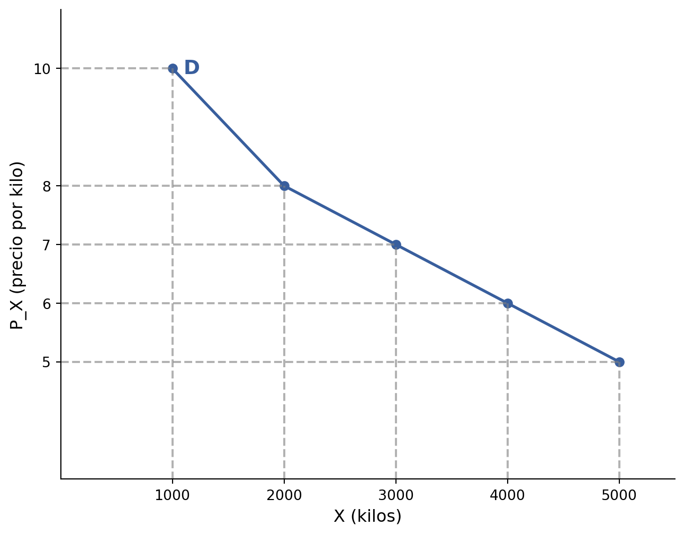
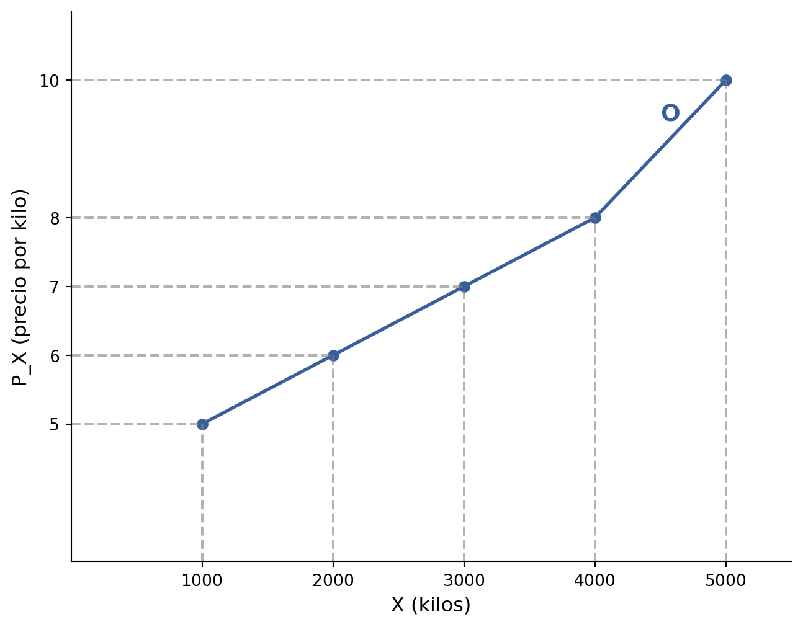
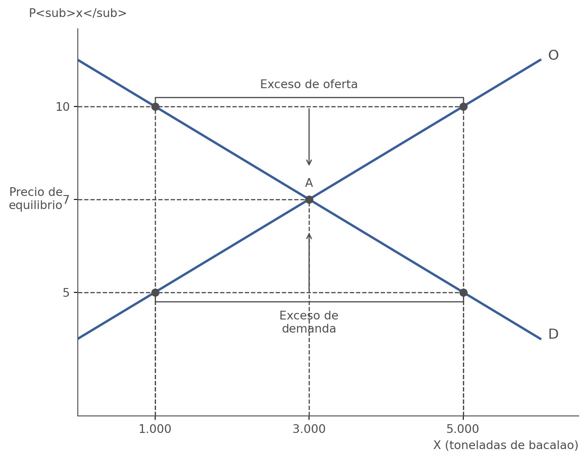

2 La demanda, la oferta y el mercado
Este capítulo trata el concepto de mercado, la demanda de un bien, la oferta de un bien, el equilibrio del mercado y la política regulatoria mediante precios máximos y mínimos.
2.1 Concepto de mercado
Un mercado es el conjunto de todos los compradores y vendedores de un producto. Los compradores están dispuestos a entregar dinero a cambio de un producto, mientras que los vendedores están dispuestos a entregar un producto a cambio de dinero. En un mercado, el precio y la cantidad producida de un producto vienen determinados por la interacción entre compradores y vendedores.
La demanda expresa la intención del comprador de comprar. La oferta expresa la intención del productor de vender. De la interacción entre ambas surge el equilibrio de mercado.
2.2 La demanda de un bien
Demandar es estar dispuesto a comprar. Por tanto, la demanda implica una intención: supone el deseo de tener el bien y, además, contar con los recursos necesarios para adquirirlo. Demandar no significa necesariamente comprar; expresa una disposición, no una acción realizada.
Un ejemplo permite distinguir estas ideas. Una persona puede desear una edición limitada de un videojuego desde que conoce su lanzamiento. Si no tiene dinero para comprarla, no hay demanda. Si tiene dinero para comprarla, sí hay demanda. Después puede intentar comprar el videojuego en tiendas en línea o físicas: si el producto está agotado, no hay compra; si está disponible, la compra se realiza.
2.2.1 La curva de demanda
La ley de la demanda establece que, cuando el precio aumenta, la cantidad demandada disminuye; y que, cuando el precio disminuye, la cantidad demandada aumenta. Esta relación se expresa gráficamente mediante la curva de demanda.
La curva de demanda no siempre es una línea recta, pero tiene pendiente negativa.
Tabla 2.2. Tabla de demanda de bacalao
| Precio del kilo de bacalao (\(P_x\)) | Cantidades demandadas de bacalao (\(X^d\)) |
|---|---|
| 10 euros | 1.000 Tn. |
| 8 euros | 2.000 Tn. |
| 7 euros | 3.000 Tn. |
| 6 euros | 4.000 Tn. |
| 5 euros | 5.000 Tn. |
En la representación gráfica, los precios se sitúan en el eje vertical y las cantidades en el eje horizontal. Aunque el bien podría representarse al revés, entre los economistas es una costumbre arraigada representar los precios en el eje vertical y las cantidades en el eje horizontal.
2.2.1.1 ¿Por qué tiene pendiente negativa?
La pendiente negativa de la curva de demanda se explica por dos efectos:
- Efecto renta: si sube el precio, algunas personas decidirán no demandarlo porque están perdiendo poder adquisitivo para poder demandar otros productos.
- Efecto sustitución: si sube el precio, algunas personas demandarán otro tipo de pescado.
2.2.2 Variables que influyen en la demanda
La demanda de un bien depende de cuatro variables fundamentales: el precio de otros bienes, la renta, los gustos y el número de consumidores en el mercado.
El precio de otros bienes influye en la demanda. En este caso se distinguen tres tipos de bienes:
- Bienes sustitutivos: satisfacen una misma necesidad de manera independiente. Por ejemplo, mantequilla y margarina, o pollo y conejo.
- Bienes complementarios: satisfacen una misma necesidad de manera conjunta. Por ejemplo, gasolina y coche, o patatas fritas y refresco.
- Bienes independientes: dos bienes no guardan relación entre sí, de modo que la variación del precio de uno no afecta a la demanda del otro.
La renta también influye en la demanda:
- En los bienes normales, cuando la renta aumenta, la cantidad demandada aumenta. Algunos ejemplos son libros, ropa o móviles.
- En los bienes inferiores, cuando la renta aumenta, la cantidad demandada disminuye, ya que se sustituyen por otros productos. Por ejemplo, puede disminuir el consumo de patatas y arroz en favor de la carne, o utilizarse menos el transporte público al pasar al vehículo propio.
Los gustos recogen las preferencias por determinados productos y aquello que está de moda, como una freidora de aire o la ropa de running.
El número de consumidores también importa: cuanto mayor sea el número de consumidores, es decir, el tamaño del mercado, mayor será la cantidad demandada.
2.2.2.1 La función de demanda
La función de demanda es la relación matemática que indica la cantidad demandada de un bien, \(X^d\), dependiendo de todas las variables que influyen en las decisiones de demanda y compra de ese bien:
\[ X^d = f(P_x, P_o, R, G, Z) \]
Donde:
- \(P_x\) = precio del bien \(X\); \(\frac{\partial X^d}{\partial P_x} < 0\).
- \(P_o\) = precio de otros bienes; \(\frac{\partial X^d}{\partial P_o} > 0\) o \(\frac{\partial X^d}{\partial P_o} < 0\).
- \(R\) = nivel de renta; \(\frac{\partial X^d}{\partial R} > 0\).
- \(G\) = gusto de los consumidores; \(\frac{\partial X^d}{\partial G} > 0\).
- \(Z\) = tamaño de mercado; \(\frac{\partial X^d}{\partial Z} > 0\).
¿Cuál es la relación entre la función de demanda y la curva de demanda? La curva de demanda es una función de demanda que tiene en cuenta el precio, \(P_x\), dejando constante el resto de las variables (ceteris paribus). Es decir, el gráfico se dibuja solo teniendo en cuenta el precio del bien \(P_x\). Se aplica la cláusula ceteris paribus, que implica que todo lo demás permanece constante.
2.2.3 Movimientos y desplazamientos de la demanda
Cuando cambia el precio del bien, hay un movimiento a lo largo de la curva de demanda. En ese caso se dice que se ha producido una variación de la cantidad demandada.
Cuando cambia alguna otra variable que afecta a la demanda, hay un desplazamiento de la curva de demanda. En ese caso se dice que se ha producido una variación de la demanda.
Los desplazamientos de la curva de demanda se producen cuando cambia alguna de las variables distintas del precio. Por ejemplo, un aumento de la renta de los consumidores desplaza la curva de demanda de teléfonos móviles, que son un bien normal, hacia la derecha.
2.3 La oferta de un bien
Ofrecer es estar dispuesto a vender. Como en el caso de la demanda, lo importante es la intención. Por su parte, “vender” es realizar efectivamente el intercambio del producto.
Un ejemplo es el de una pastelería con exceso de producción de tartas. Una pastelería abre en un barrio nuevo y su dueño decide preparar una gran cantidad de tartas de manzana. La intención de venta, es decir, la oferta, aparece cuando llena la vitrina con una gran variedad de tartas de manzana. Sin embargo, la venta como acción puede verse limitada por dos problemas: la falta de demanda y la competencia cercana.
2.3.1 La curva de oferta
La ley de la oferta establece que, cuando el precio aumenta, la cantidad ofrecida aumenta; y que, cuando el precio disminuye, la cantidad ofrecida disminuye. Esta relación se expresa gráficamente mediante la curva de oferta, que tiene pendiente positiva.
Tabla 2.3. Tabla de oferta de bacalao
| Precio del kilo de bacalao (\(P_x\)) | Cantidades ofrecidas de bacalao (\(X^o\)) |
|---|---|
| 10 euros | 5.000 Tn. |
| 8 euros | 4.000 Tn. |
| 7 euros | 3.000 Tn. |
| 6 euros | 2.000 Tn. |
| 5 euros | 1.000 Tn. |

2.3.2 Variables que influyen en la oferta
La oferta de un bien depende de cuatro variables fundamentales: el estaedo de la tecnología, el precio de los factores productivos, los impuestos sobre las ventas y el número de empresas en el mercado.
El estado de la tecnología influye en la producción. Una mejora tecnológica puede llegar a producir una mayor cantidad de producto utilizando una menor cantidad de recursos que antes del cambio.
El precio de los factores productivos también influye: cuanto más alto sea el precio de los factores que se utilizan, la cantidad ofrecida del producto se reducirá.
Los impuestos sobre las ventas afectan a la oferta. Un aumento de estos impuestos encarece el producto sin mayor beneficio para los empresarios, reduciendo la oferta.
El número de empresas también es relevante: cuanto más elevado es el número de empresas que producen el mismo bien, mayor será la cantidad ofrecida.
2.3.2.1 La función de oferta
La función de oferta es la relación matemática que indica la cantidad ofrecida de un bien, \(X^o\), dependiendo de todas las variables que influyen en las decisiones de producción y venta de ese bien:
\[ X^o = f(P_x, t, P_f, imp, N) \]
Donde:
- \(P_x\) = precio del bien \(X\); \(\frac{\partial X^o}{\partial P_x} > 0\).
- \(t\) = estado de la tecnología en la producción del bien \(X\); \(\frac{\partial X^o}{\partial t} > 0\).
- \(P_f\) = precio de los factores de producción; \(\frac{\partial X^o}{\partial P_f} < 0\).
- \(imp\) = impuestos sobre las ventas; \(\frac{\partial X^o}{\partial imp} < 0\).
- \(N\) = número de empresas que actúan en este mercado; \(\frac{\partial X^o}{\partial N} > 0\).
La curva de oferta es una función de oferta que tiene en cuenta el precio del bien, \(P_x\), dejando constante el resto de las variables (ceteris paribus). El gráfico se dibuja solo teniendo en cuenta el precio del bien, \(P_x\). Se aplica la cláusula ceteris paribus, que implica que todo lo demás permanece constante.
2.3.3 Movimientos y desplazamientos de la oferta
Cuando cambia el precio del bien, hay un movimiento a lo largo de la curva de oferta. En ese caso se dice que se ha producido una variación de la cantidad ofrecida.
Cuando cambia alguna otra variable que afecta a la oferta, hay un desplazamiento de la curva de oferta. En ese caso se dice que se ha producido una variación de la oferta.
Los desplazamientos de la curva de oferta se producen cuando cambia alguna de las variables distintas del precio. Por ejemplo, un aumento del precio del combustible desplaza la curva de oferta de bacalao hacia la izquierda.
2.4 El equilibrio del mercado
Al considerar conjuntamente la oferta y la demanda, pueden aparecer situaciones de exceso de oferta, exceso de demanda o equilibrio.
Hay exceso de demanda cuando la cantidad demandada a un precio es superior a la cantidad ofrecida a ese precio. Es decir, para ese precio, la cantidad que los consumidores están dispuestos a comprar es mayor que la cantidad que los productores están dispuestos a vender.
Hay exceso de oferta cuando la cantidad ofrecida a un precio es superior a la cantidad demandada a ese precio. Es decir, para ese precio, la cantidad que los productores están dispuestos a vender es mayor que la cantidad que los consumidores están dispuestos a comprar.
El equilibrio de mercado se alcanza cuando la cantidad ofrecida coincide con la cantidad demandada. En ese punto existe un vaciado del mercado, ya que ningún participante ha quedado con deseos insatisfechos de comprar o vender a ese precio. Esta situación corresponde al equilibrio económico.
Tabla 2.4. Oferta y demanda de forma conjunta: exceso de oferta o exceso de demanda a cada precio
| Precio del kilo de bacalao (\(P_x\)) | Cantidad demandada de bacalao (\(X^d\)) | Cantidad ofrecida de bacalao (\(X^o\)) | Situación |
|---|---|---|---|
| 10 euros | 1.000 Tn. | 5.000 Tn. | Exceso de oferta = 4.000 Tn. |
| 8 euros | 2.000 Tn. | 4.000 Tn. | Exceso de oferta = 2.000 Tn. |
| 7 euros | 3.000 Tn. | 3.000 Tn. | Demanda = oferta → equilibrio |
| 6 euros | 4.000 Tn. | 2.000 Tn. | Exceso de demanda = 2.000 Tn. |
| 5 euros | 5.000 Tn. | 1.000 Tn. | Exceso de demanda = 4.000 Tn. |

En la representación conjunta de la oferta y la demanda, el precio de equilibrio corresponde al punto de corte entre la curva de oferta y la curva de demanda, señalado como punto A.
Cuando la cantidad ofrecida y la cantidad demandada son diferentes, la menor de las dos cantidades, el lado corto del mercado, es la que determina la compra y la venta.
Si el precio es superior al de equilibrio, existe exceso de oferta y el mercado empuja el precio hacia abajo.
Si el precio es inferior al de equilibrio, existe exceso de demanda y el mercado empuja el precio hacia arriba.
Si el precio es el de equilibrio, el mercado tiende a mantener el precio.
2.5 Política regulatoria: precios máximos y mínimos
El Estado puede intervenir en el mercado mediante la regulación de precios, estableciendo un precio máximo y/o un precio mínimo.
2.5.1 Precio máximo
Si se establece un precio máximo por debajo del precio de equilibrio, se genera un exceso de demanda permanente, es decir, hay escasez. Esta situación da lugar a colas, cartillas de racionamiento e incluso mercado negro.
En este ejemplo, el equilibrio corresponde al punto A. Al establecer un precio máximo de 6 euros, los vendedores ofrecen 2.000 toneladas mientras que los compradores demandan 4.000. Como el precio no puede subir, se compran y venden 2.000 toneladas. Sin embargo, como la cantidad demandada es de 4.000, el mercado se encuentra en desequilibrio, puesto que las cantidades ofrecidas y demandadas no coinciden. Se produce una situación de escasez, con una demanda insatisfecha de 2.000 toneladas.
2.5.2 Precio mínimo
Si se establece un precio mínimo por encima del precio de equilibrio, se genera un exceso de oferta permanente, es decir, hay excedente de producto.
En este ejemplo, al establecer un precio mínimo de 8 euros, los vendedores ofrecen 4.000 toneladas mientras que los compradores demandan 2.000. Como el precio no puede bajar, se compran y venden 2.000 toneladas. Como la cantidad ofrecida es de 4.000, el mercado se encuentra en desequilibrio, ya que las cantidades ofrecidas y demandadas no coinciden. Se produce una situación de excedente de producto correspondiente a 2.000 toneladas que no pueden venderse.